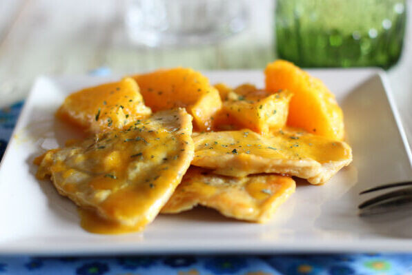

Volver a la pagina principal
Pechugas de pavo al jenjibre

Ingredientes
- 4 cucharadas de mantequilla
- 2 shallots picaditos
- 3 dientes de ajo machacados
- 2 cucharadas de jengibre rallado
- 3 cucharadas de cilantrillo picadito
- 6 pechugas de pavo adobadas con sal y pimienta
Paso a paso
- En una sartén, dorar las pechugas hasta que esten cocidas de 3 a 4 minutos por cada lado. Reserve y mantenga caliente.
- En la misma sartén, derrita 1 cucharda de mantequilla y sofría los shallots con el ajo, el jengibre y la mitad del cilantrillo.
- Añada el resto de la mantequilla y moviendo, derrita para que se una al shallot el jengibre.
- Vuelva a poner las pechugas al sartén y envuelva bien con la mantequilla y ya pude servir el plato.
Resultado final